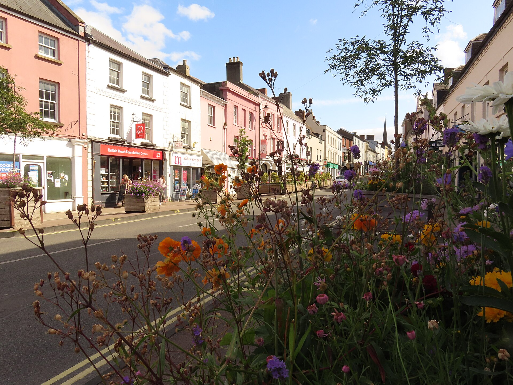
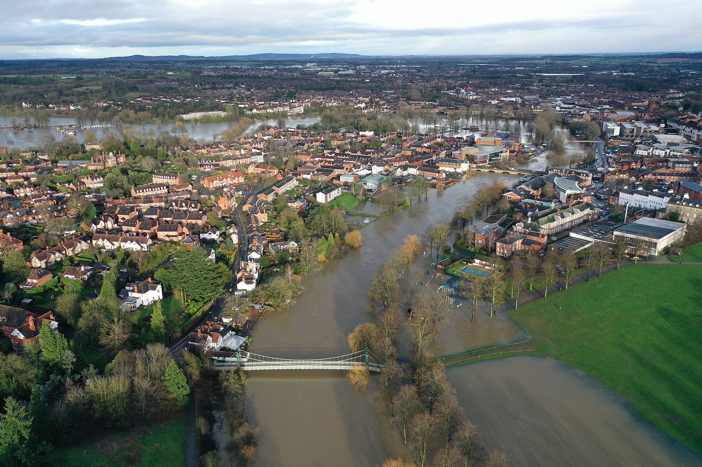
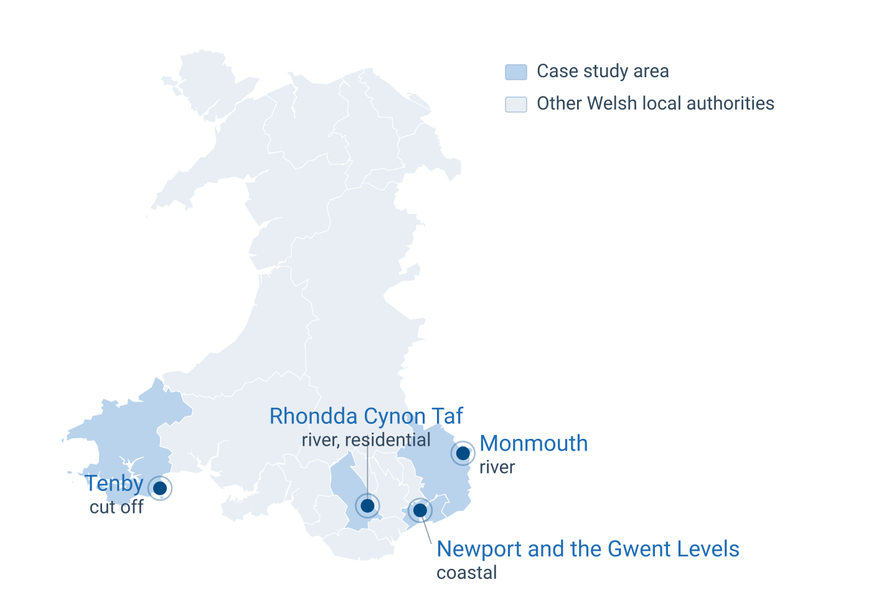

OR68 Annual Conference, From Data to Decisions | University of Nottingham, September 2026
Data Lab for Social Good, Cardiff Business School, Cardiff University
Data Lab for Social Good, Cardiff Business School, Cardiff University
School of Mathematics, Cardiff University
School of Engineering, University of Swansea
A community hospital takes on water. Staff move every patient up to the first floor and wait there. Their access is cut off until the water level drops.
On the city’s main street, a pharmacy, a dentist, and a GP surgery all flood at once.
The water never reaches the electrical substations, but they fail anyway. Power is gone for up to 48 hours, and people on home oxygen and dialysis machines, well outside the flooded streets, are suddenly at risk.
This is what flooding disruption to healthcare actually looks like. My PhD is about understanding it, measuring it, and planning for it.

Monnow Street, Monmouth.
Floods and rising sea levels keep disrupting how healthcare is delivered in Wales. We map where the water goes, but we do not map what stops working.
How do floods disrupt healthcare service delivery, and what can we do about it?

A river overflowing through a riverside town
Each package feeds the next. WP1 defines what the models need to consider and measure, and the current vulnerability defines what the future planning adapts.
Healthcare delivery is a system of interdependent parts. A flood is a shock that propagates through them.
A facility can stay completely dry and still stop delivering care. Monmouth proved it.
Accident and Emergency, Nevill Hall Hospital, Abergavenny.
WP1 combines computational reach with qualitative depth.
The text gives breadth and the what. The interviews give the why and the cascades. Together they triangulate.

Local authority boundaries: ONS Open Geography Portal.
Recall-first strategy, because a lost document costs evidence; an extra read only costs compute.
A spatio-temporal model that scores healthcare facilities and tracks how floods change demand.
Partners are clear that the drivers of vulnerability matter more than the score itself.
How healthcare delivery stays functional as the climate shifts, and how scarce resources are planned for floods.
Questions and discussion welcome.
Amirhossein Ghadiri
Data Lab for Social Good, Cardiff Business School
Supervised by Bahman Rostami-Tabar, Thomas Woolley, and William Bennett | Funded by WGSSS (ESRC)
GhadiriA@cardiff.ac.uk
amirhosseinghdv | amirhossein-ghadiri | 🌐 amirhosseinghdv.github.io
Slides available at: amirhosseinghdv.github.io